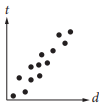

Hint Countdown!
Hint
Which of the following graphs best shows a strong negative association between d and t ?
A.
B.
C. 
D.
Based on the histogram above, of the following, which is closest to the average (arithmetic mean) number of seeds per apple?
A. 4 B. 5 C. 6 D. 7
A group of tenth-grade students responded to a survey that asked which math course they were currently enrolled in. The survey data were broken down as shown in the table above. Which of the following categories accounts for approximately 19 percent of all the survey respondents?
A. Females taking Geometry B. Females taking Algebra II C. Males taking Geometry D. Males taking Algebra I
The table above lists the lengths, to the nearest inch, of a random sample of 21 brown bullhead fish. The outlier measurement of 24 inches is an error. Of the mean, median, and range of the values listed, which will change the most if the 24-inch measurement is removed from the data?
A. Mean B. Median C. Range D. They will all change by the same amount.
The data in the table above were produced by a sleep researcher studying the number of dreams people recall when asked to record their dreams for one week. Group X consisted of 100 people who observed early bedtimes, and Group Y consisted of 100 people who observed later bedtimes. If a person is chosen at random from those who recalled at least 1 dream, what is the probability that the person belonged to Group Y ?
A. 68⁄100 B. 79⁄100 C. 79⁄164 D. 164⁄200
A square field measures 10 meters by 10 meters. Ten students each mark off a randomly selected region of the field; each region is square and has side lengths of 1 meter, and no two regions overlap. The students count the earthworms contained in the soil to a depth of 5 centimeters beneath the ground’s surface in each region. The results are shown in the table below.
Which of the following is a reasonable approximation of the number of earthworms to a depth of 5 centimeters beneath the ground’s surface in the entire field?
A. 150 B. 1,500 C. 15,000 D. 150,000
A researcher conducted a survey to determine whether people in a certain large town prefer watching sports on television to attending the sporting event. The researcher asked 117 people who visited a local restaurant on a Saturday, and 7 people refused to respond. Which of the following factors makes it least likely that a reliable conclusion can be drawn about the sports-watching preferences of all people in the town?
A. Sample size B. Population size C. The number of people who refused to respond D. Where the survey was given
According to the line of best fit in the scatterplot above, which of the following best approximates the year in which the number of miles traveled by air passengers in Country X was estimated to be 550 billion?
A. 1997 B. 2000 C. 2003 D. 2008
The table above summarizes the results of 200 law school graduates who took the bar exam. If one of the surveyed graduates who passed the bar exam is chosen at random for an interview, what is the probability that the person chosen did not take the review course?
A. 18⁄25 B. 7⁄25 C. 25⁄200 D. 7⁄200
A survey was taken of the value of homes in a county, and it was found that the mean home value was $165,000 and the median home value was $125,000. Which of the following situations could explain the difference between the mean and median home values in the county?
A. The homes have values that are close to each other. B. There are a few homes that are valued much less than the rest. C. There are a few homes that are valued much more than the rest. D. Many of the homes have values between $125,000 and $165,000.
A sociologist chose 300 students at random from each of two schools and asked each student how many siblings he or she has. The results are shown in the table below.
There are a total of 2,400 students at Lincoln School and 3,300 students at Washington School.
What is the median number of siblings for all the students surveyed?
A. 0 B. 1 C. 2 D. 3
Based on the survey data, which of the following most accurately compares the expected total number of students with 4 siblings at the two schools?
A. The total number of students with 4 siblings is expected to be equal at the two schools. B. The total number of students with 4 siblings at Lincoln School is expected to be 30 more than at Washington School. C. The total number of students with 4 siblings at Washington School is expected to be 30 more than at Lincoln School. D. The total number of students with 4 siblings at Washington School is expected to be 900 more than at Lincoln School.
The table above shows the distribution of age and gender for 25 people who entered a contest. If the contest winner will be selected at random, what is the probability that the winner will be either a female under age 40 or a male age 40 or older?
A. 4⁄25 B. 10⁄25 C. 11⁄25 D. 16⁄25
In order to determine if treatment X is successful in improving eyesight, a research study was conducted. From a large population of people with poor eyesight, 300 participants were selected at random. Half of the participants were randomly assigned to receive treatment X, and the other half did not receive treatment X. The resulting data showed that participants who received treatment X had significantly improved eyesight as compared to those who did not receive treatment X. Based on the design and results of the study, which of the following is an appropriate conclusion?
A. Treatment X is likely to improve the eyesight of people who have poor eyesight. B. Treatment X improves eyesight better than all other available treatments. C. Treatment X will improve the eyesight of anyone who takes it. D. Treatment X will cause a substantial improvement in eyesight.
Michael swam 2,000 yards on each of eighteen days. The scatterplot above shows his swim time for and corresponding heart rate after each swim. The line of best fit for the data is also shown. For the swim that took 34 minutes, Michael’s actual heart rate was about how many beats per minutes less than the rate predicted by the line of best fit?
A. 1 B. 2 C. 3 D. 4
The incomplete table above summarizes the number of left-handed students and right-handed students by gender for the eighth-grade students at Keisel Middle School. There are 5 times as many right-handed female students as there are left-handed female students, and there are 9 times as many right-handed male students as there are left-handed male students. If there is a total of 18 left-handed students and 122 right-handed students in the school, which of the following is closest to the probability that a right-handed student selected at random is female? (Note: Assume that none of the eighth-grade students are both right-handed and left-handed.)
A. 0.410 B. 0.357 C. 0.333 D. 0.250
The table above lists the ages of the first 12 United States presidents when they began their terms in office. According to the table, what was the mean age, in years, of these presidents at the beginning of their terms? (Round your answer to the nearest tenth.)
The table above represents the 50 movies that had the greatest ticket sales in 2012, categorized by movie type and Motion Picture Association of America (MPAA) rating. What proportion of the movies are comedies with a PG-13 rating?
A. 2⁄25 B. 9⁄50 C. 2⁄11 D. 11⁄25
The table above shows the number of registered voters in 2012, in thousands, in four geographic regions and five age groups. Based on the table, if a registered voter who was 18 to 44 years old in 2012 is chosen at random, which of the following is closest to the probability that the registered voter was from the Midwest region?
A. 0.10 B. 0.25 C. 0.40 D. 0.75
A curator at a wildlife society created the scatterplot above to examine the relationship between the gestation period and life expectancy of 10 species of animals.
What is the life expectancy, in years, of the animal that has the longest gestation period?
A. 3 B. 4 C. 8 D. 10
The bar graph above shows renewable energy consumption in quadrillions of British thermal units (Btu) in the United States, by energy source, for several energy sources in the years 2000 and 2010.
In a scatterplot of this data, where renewable energy consumption in the year 2000 is plotted along the x-axis and renewable energy consumption in the year 2010 is plotted along the y-axis for each of the given energy sources, how many data points would be above the line y = x ?
The tables below give the distribution of high temperatures in degrees Fahrenheit (°F) for City A and City B over the same 21 days in March.
Which of the following is true about the data shown for these 21 days?
A. The standard deviation of temperatures in City A is larger. B. The standard deviation of temperatures in City B is larger. C. The standard deviation of temperatures in City A is the same as that of City B. D. The standard deviation of temperatures in these cities cannot be calculated with the data provided.
If x is the average (arithmetic mean) of m and 9, y is the average of 2m and 15, and z is the average of 3m and 18, what is the average of x, y, and z in terms of m ?
A. m + 6 B. m + 7 C. 2m + 14 D. 3m + 21
In a survey, 607 general surgeons and orthopedic surgeons indicated their major professional activity. The results are summarized in the table above. If one of the surgeons is selected at random, which of the following is closest to the probability that the selected surgeon is an orthopedic surgeon whose indicated professional activity is research?
A. 0.122 B. 0.196 C. 0.318 D. 0.379
A polling agency recently surveyed 1,000 adults who were selected at random from a large city and asked each of the adults, “Are you satisfied with the quality of air in the city?” Of those surveyed, 78 percent responded that they were satisfied with the quality of air in the city. Based on the results of the survey, which of the following statements must be true?
I. Of all adults in the city, 78 percent are satisfied with the quality of air in the city.
II. If another 1,000 adults selected at random from the city were surveyed, 78 percent of them would report they are satisfied with the quality of air in the city.
III. If 1,000 adults selected at random from a different city were surveyed, 78 percent of them would report they are satisfied with the quality of air in the city.
A. None B. II only C. I and II only D. I and III only
In State X, Mr. Camp’s eighth-grade class consisting of 26 students was surveyed and 34.6 percent of the students reported that they had at least two siblings. The average eighth-grade class size in the state is 26. If the students in Mr. Camp’s class are representative of students in the state’s eighth-grade classes and there are 1,800 eighth-grade classes in the state, which of the following best estimates the number of eighth-grade students in the state who have fewer than two siblings?
A. 16,200 B. 23,400 C. 30,600 D. 46,800
A psychologist set up an experiment to study the tendency of a person to select the first item when presented with a series of items. In the experiment, 300 people were presented with a set of five pictures arranged in random order. Each person was asked to choose the most appealing picture. Of the first 150 participants, 36 chose the first picture in the set. Among the remaining 150 participants, p people chose the first picture in the set. If more than 20% of all participants chose the first picture in the set, which of the following inequalities best describes the possible values of p ?
A. p > 0.20(300 − 36), where p ≤ 150 B. p > 0.20(300 + 36), where p ≤ 150 C. p − 36 > 0.20(300), where p ≤ 150 D. p + 36 > 0.20(300), where p ≤ 150
The mean score of 8 players in a basketball game was 14.5 points. If the highest individual score is removed, the mean score of the remaining 7 players becomes 12 points. What was the highest score?
A. 20 B. 24 C. 32 D. 36
Jaime is preparing for a bicycle race. His goal is to bicycle an average of at least 280 miles per week for 4 weeks. He bicycled 240 miles the first week, 310 miles the second week, and 320 miles the third week. Which inequality can be used to represent the number of miles, x, Jaime could bicycle on the 4th week to meet his goal?
A. ((240 + 310 + 320) / 3) + x ≥ 280 B. 240 + 310 + 320 ≥ x(280) C. (240⁄4) + (310⁄4) + (320⁄4) + x ≥ 280 D. 240 + 310 + 320 + x ≥ 4(280)
The members of a city council wanted to assess the opinions of all city residents about converting an open field into a dog park. The council surveyed a sample of 500 city residents who own dogs. The survey showed that the majority of those sampled were in favor of the dog park. Which of the following is true about the city council’s survey?
A. It shows that the majority of city residents are in favor of the dog park. B. The survey sample should have included more residents who are dog owners C. The survey sample should have consisted entirely of residents who do not own dogs. D. The survey sample is biased because it is not representative of all city residents.
The table above shows the flavors of ice cream and the toppings chosen by the people at a party. Each person chose one flavor of ice cream and one topping. Of the people who chose vanilla ice cream, what fraction chose hot fudge as a topping?
A. 8⁄25 B. 5⁄13 C. 13⁄25 D. 8⁄13
In 1919, H. S. Reed and R. H. Holland published a paper on the growth of sunflowers. Included in the paper were the table and graph above, which show the height h, in centimeters, of a sunflower t days after the sunflower begins to grow.
Over which of the following time periods is the average growth rate of the sunflower least?
A. Day 0 to Day 21 B. Day 21 to Day 42 C. Day 42 to Day 63 D. Day 63 to Day 84
A study was done on the weights of different types of fish in a pond. A random sample of fish were caught and marked in order to ensure that none were weighed more than once. The sample contained 150 largemouth bass, of which 30% weighed more than 2 pounds. Which of the following conclusions is best supported by the sample data?
A. The majority of all fish in the pond weigh less than 2 pounds. B. The average weight of all fish in the pond is approximately 2 pounds. C. Approximately 30% of all fish in the pond weigh more than 2 pounds. D. Approximately 30% of all largemouth bass in the pond weigh more than 2 pounds.
In 2008, there were 21 states with 10 or more electoral votes, as shown in the table above. Based on the table, what was the median number of electoral votes for the 21 states?
A. 13 B. 15 C. 17 D. 20
Andrew and Maria each collected six rocks, and the masses of the rocks are shown in the table above. The mean of the masses of the rocks Maria collected is 0.1 kilogram greater than the mean of the masses of the rocks Andrew collected. What is the value of x ?
The table above shows the kinds of foods that are fed to the cats and dogs currently boarded at a pet care facility. What fraction of the dogs are fed only dry food?
A. 2⁄41 B. 2⁄25 C. 7⁄41 D. 2⁄7
A market researcher selected 200 people at random from a group of people who indicated that they liked a certain book. The 200 people were shown a movie based on the book and then asked whether they liked or disliked the movie. Of those surveyed, 95% said they disliked the movie. Which of the following inferences can appropriately be drawn from this survey result?
A. At least 95% of people who go see movies will dislike this movie. B. At least 95% of people who read books will dislike this movie C. Most people who dislike this book will like this movie. D. Most people who like this book will dislike this movie.
The scatterplot above shows the densities of 7 planetoids, in grams per cubic centimeter, with respect to their average distances from the Sun in astronomical units (AU). The line of best fit is also shown.
According to the scatterplot, which of the following statements is true about the relationship between a planetoid’s average distance from the Sun and its density?
A. Planetoids that are more distant from the Sun tend to have lesser densities. B. Planetoids that are more distant from the Sun tend to have greater densities. C. The density of a planetoid that is twice as far from the Sun as another planetoid is half the density of that other planetoid. D. The distance from a planetoid to the Sun is unrelated to its density.
An astronomer has discovered a new planetoid about 1.2 AU from the Sun. According to the line of best fit, which of the following best approximates the density of the planetoid, in grams per cubic centimeter?
A. 3.6 B. 4.1 C. 4.6 D. 5.5
The scatterplot above shows data for ten charities along with the line of best fit. For the charity with the greatest percent of total expenses spent on programs, which of the following is closest to the difference of the actual percent and the percent predicted by the line of best fit?
A. 10% B. 7% C. 4% D. 1%
The scatterplot above shows the numbers of grams of both total protein and total fat for eight sandwiches on a restaurant menu. The line of best fit for the data is also shown. According to the line of best fit, which of the following is closest to the predicted increase in total fat, in grams, for every increase of 1 gram in total protein?
A. 2.5 B. 2.0 C. 1.5 D. 1.0
A survey was given to residents of all 50 states asking if they had earned a bachelor’s degree or higher. The results from 7 of the states are given in the table above. The median percent of residents who earned a bachelor’s degree or higher for all 50 states was 26.95%. What is the difference between the median percent of residents who earned a bachelor’s degree or higher for these 7 states and the median for all 50 states?
A. 0.05% B. 0.95% C. 1.22% D. 7.45%
The same 20 contestants, on each of 3 days, answered 5 questions in order to win a prize. Each contestant received 1 point for each correct answer. The number of contestants receiving a given score on each day is shown in the table above.
What was the mean score of the contestants on Day 1 ?
No contestant received the same score on two different days. If a contestant is selected at random, what is the probability that the selected contestant received a score of 5 on Day 2 or Day 3, given that the contestant received a score of 5 on one of the three days?
In a random sample of 200 cars of a particular model, 3 have a manufacturing defect. At this rate, how many of 10,000 cars of the same model will have a manufacturing defect?
A. 150 B. 200 C. 250 D. 300
The scatterplot above shows data collected on the lengths and widths of Iris setosa petals. A line of best fit for the data is also shown. Based on the line of best fit, if the width of an Iris setosa petal is 19 millimeters, what is the predicted length, in millimeters, of the petal?
A. 21.10 B. 31.73 C. 52.83 D. 55.27
The table shows the results of a research study that investigated the therapeutic value of vitamin C in preventing colds. A random sample of 300 adults received either a vitamin C pill or a sugar pill each day during a 2-week period, and the adults reported whether they contracted a cold during that time period. What proportion of adults who received a sugar pill reported contracting a cold?
A. 11⁄18 B. 11⁄50 C. 9⁄50 D. 11⁄100
The table above shows the distribution of ages of the 20 students enrolled in a college class. Which of the following gives the correct order of the mean, median, and mode of the ages?
A. mode < median < mean B. mode < mean < median C. median < mode < mean D. mean < mode < median
The figure below shows the relationship between the percent of leaf litter mass remaining after decomposing for 3 years and the mean annual temperature, in degrees Celsius (°C), in 18 forests in Canada. A line of best fit is also shown.
A particular forest in Canada, whose data is not included in the figure, had a mean annual temperature of −2°C. Based on the line of best fit, which of the following is closest to the predicted percent of leaf litter mass remaining in this particular forest after decomposing for 3 years?
A. 50% B. 63% C. 70% D. 82%
For the finale of a TV show, viewers could use either social media or a text message to vote for their favorite of two contestants. The contestant receiving more than 50% of the vote won. An estimated 10% of the viewers voted, and 30% of the votes were cast on social media. Contestant 2 earned 70% of the votes cast using social media and 40% of the votes cast using a text message. Based on this information, which of the following is an accurate conclusion?
A. If all viewers had voted, Contestant 2 would have won. B. Viewers voting by social media were likely to be younger than viewers voting by text message. C. If all viewers who voted had voted by social media instead of by text message, Contestant 2 would have won. D. Viewers voting by social media were more likely to prefer Contestant 2 than were viewers voting by text message.
To determine the mean number of children per household in a community, Tabitha surveyed 20 families at a playground. For the 20 families surveyed, the mean number of children per household was 2.4. Which of the following statements must be true?
A. The mean number of children per household in the community is 2.4. B. A determination about the mean number of children per household in the community should not be made because the sample size is too small. C. The sampling method is flawed and may produce a biased estimate of the mean number of children per household in the community. D. The sampling method is not flawed and is likely to produce an unbiased estimate of the mean number of children per household in the community.
The 22 students in a health class conducted an experiment in which they each recorded their pulse rates, in beats per minute, before and after completing a light exercise routine. The dot plots below display the results.
Let s1 and r1 be the standard deviation and range, respectively, of the data before exercise, and let s2 and r2 be the standard deviation and range, respectively, of the data after exercise. Which of the following is true?
A. s1 = s2 and r1 = r2 B. s1 < s2 and r1 < r2 C. s1 > s2 and r1 > r2 D. s1 ≠ s2 and r1 ≠ r2
Submit Countdown!